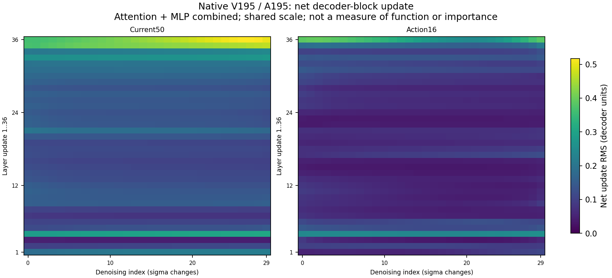
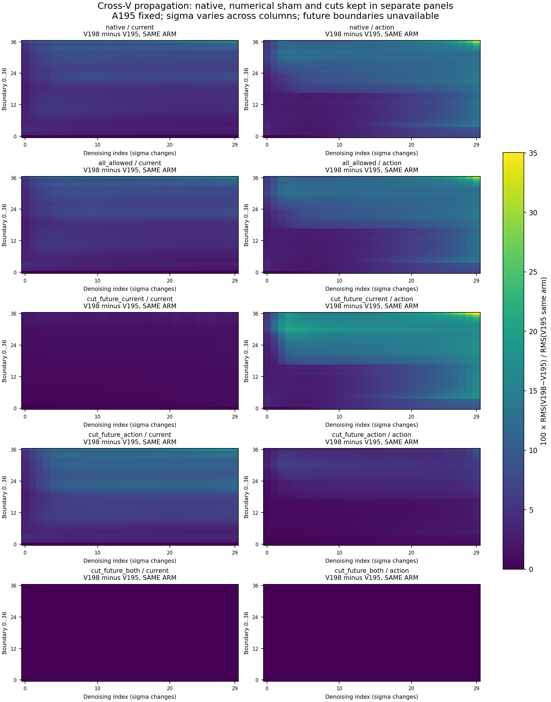
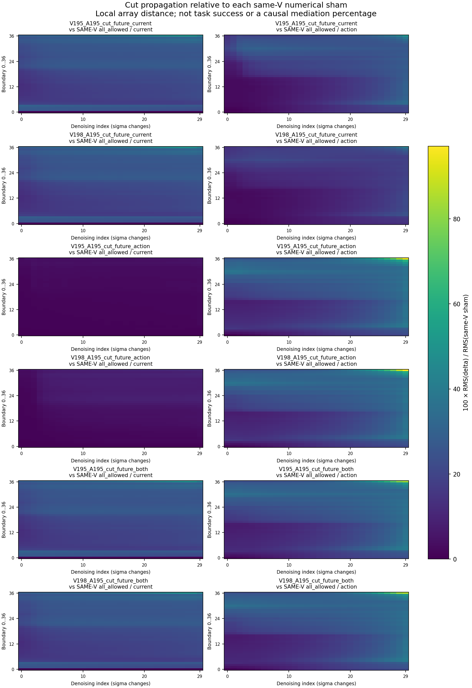

2026-10-04 · 最新网络通路实验 · 代码、真实数组与记录
能画“活动地图”，还能切连接追踪影响。
只查一个问题：指令一直是“抓牛奶，放进篮子”。牛奶移远后却抓奶酪盒。我们要找到导致转抓的具体内部计算，并验证改它能否救回。
这次真的动了网络内部：在同一个12厘米初态，保留照片、指令和动作起点，分别切断“未来生成分支→当前视觉”和“未来生成分支→动作”的attention连接。10组都跑完了，保存36层、30次去噪的真实数组，再把动作交给MuJoCo执行。
1. 先看这张活动图
左边：当前视觉数组。右边：动作数组。纵轴是网络的第1～36层，横轴是30次去噪计算。越亮，表示经过这一层后，这组向量的净改动越大。

这一例里，动作数组的平均净改动在第36、4、35层较大。这只能说它们改了较多数字，不能直接说它们负责记忆、牛奶识别或选目标。要确定功能，还得局部改动它们，观察动作和真实抓取。
这里记录的是50个当前视觉token和16个动作token，每个4096维。还没有这批200个未来token的完整逐层活动，也没有把4096个坐标冒充attention head或MLP单元。
2. 切断连接以后，信息怎么走？
比较两份未来起点A／B时，文字、当前画面和动作起点都相同。先只禁止动作直接读取未来数组：
实际看到：第1层动作两组逐位相同；第2层又出现差异。结合真实代码与mask核验，影响是经第1层当前视觉→第2层动作这条仍开放的连接传过来的。反过来只切未来→当前视觉，也会经动作分支绕回来。
两个入口一起切后，全部30次去噪、37个记录边界的当前视觉／动作数组，在A与B之间都逐位相同。这表示两份起点的影响被隔开了，不是网络停止工作了。
展开全部层／时刻的传播图与真实数组


3. 接上机械臂，到底抓了谁？
两列只区别于首轮未来生成的随机起点A／B。每条先执行首轮16步，之后7轮都重新拍各自画面，正常推理。以下全是实际MuJoCo抓取，不是模型生成的视频。
| 首轮网络怎么改 | 未来起点A（195） | 未来起点B（198） |
|---|---|---|
| 原生计算 | 奶酪盒，第68～72步 | 牛奶，第64～68步 |
| 接口对照：连接全保留 | 奶酪盒，第70～74步 | 牛奶，第64～68步 |
| 只切未来→当前视觉 | 牛奶，第60～64步 | 没有满足严格抓起条件 |
| 只切未来→动作 | 奶酪盒，第79～83步 | 奶酪盒，第80～84步 |
| 两个入口都切 | 奶酪盒，第79～83步 | 奶酪盒，第79～83步 |
怎么理解？切未来→当前视觉，A从抓错变成抓牛奶，但B没有完成严格抓起；切未来→动作，原来能抓牛奶的B也改抓奶酪；两个入口一起切，两组都抓奶酪、整个轨迹相同。这些通路确实会影响抓取，作用却不是单向“有害”。
这还没证明它们表示牛奶身份，也没证明是记忆或训练数据的根因。尤其“没有抓起”不能直接等同“选了哪个目标”。这次切的是首轮全部36层、全部30次去噪中的一整类连接，范围仍很大。
当前：只切未来→当前视觉，起点A；由抓奶酪变成抓牛奶，第60～64步连续满足抓起条件。不是最终放篮成功。
复现和防止假结果的检查
先用两条原生对照，精确复现旧实验全部129份仿真状态、128步动作、8轮画面与完整模型记录。再加两个“同样使用mask接口，但连接全保留”的对照；抓谁都保留，不过数字和抓起时刻并非完全不变。各切断条件与自己的接口对照比较。
每个实际attention位置核验未屏蔽行与同输入全允许结果逐字节一致；未来200行和文字分支保留本次原生输出。两个入口全切的两组，首轮动作、后7轮真实反馈／完整模型记录及129份物理状态都精确相同。抓起要求双侧指垫同时接触，且相对初态抬高严格超过2厘米，连续5份记录。上表标出完整五步窗口，不把抓起当最终放篮成功。
本批300次首轮网络计算＋2100次后续计算，共2400次；10条实际128步闭环。活动作图只读保存数组，新增模型计算0次。完整source、mask、噪声、控制、全部轨迹、动作与录像见10条完整执行。300份逐层原始文件保存在A6000，全部SHA有记录；公开10份第1次去噪完整逐层文件，以及覆盖全部30次的统计和部分真实坐标。没有声称公开了全部6GB原始逐层文件。
屏蔽连接也会重新归一化剩余attention权重。它是对这组读取关系的干预，不能简单解释成减掉了一份“牛奶信息”。
4. 下一步，才开始缩小“区域”
现在先查：未来→当前视觉的哪几层，会让A改抓牛奶，同时避免破坏B？把早、中、晚层分开切，保留各自接口对照，再检验细到层／head的候选。最后必须回到15厘米抓错场景，并让牛奶换位置；否则还不能叫解决了问题。
“活动→连接→局部干预”的思路参考On the Biology of a Large Language Model（2025）；多路径与干预解释参考activation patching方法讨论。我们使用原模型的真实数组和连接屏蔽，没有训练文中的替代模型，也没有把网络命名为海马体。
此前证据，只在需要时展开
只移动牛奶，原位／6／9厘米各三次都抓牛奶；12厘米有两种结果；15厘米三次都抓奶酪。随后交叉未来与动作的初始噪声，四次抓谁跟随未来起点。这才开始本页的网络通路实验。
此前局部改第4层MLP能削弱一次去噪响应，但四条15厘米实际执行仍抓奶酪。亮、响应大和导致抓错是不同的问题。此前原始数组和图继续保存在实验记录。